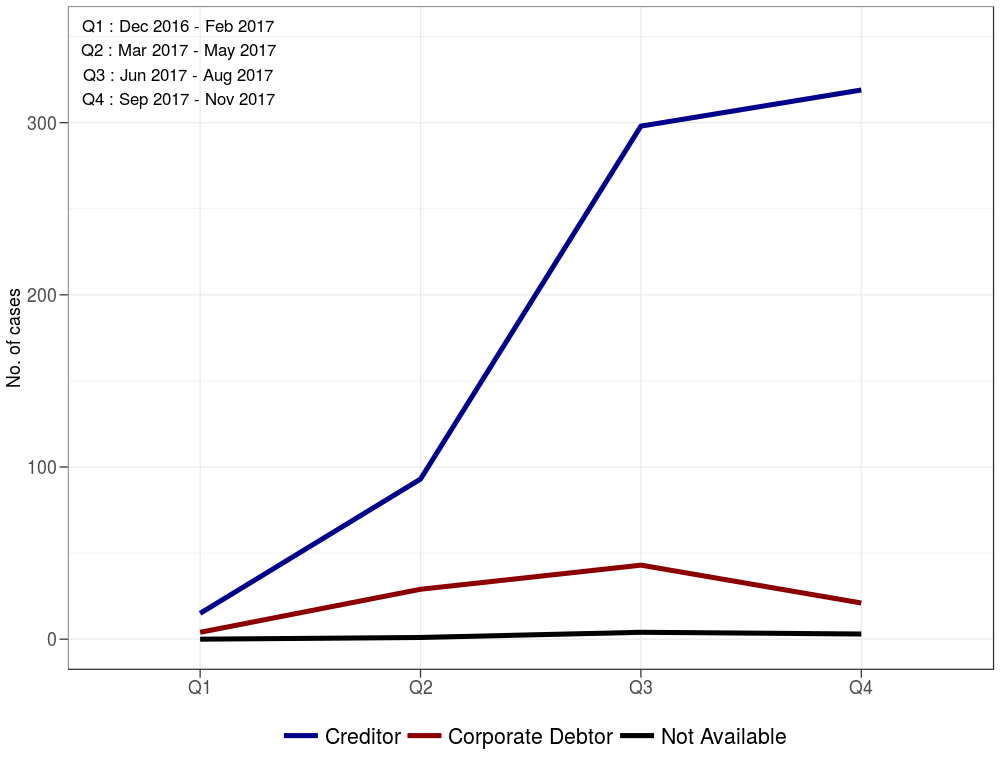
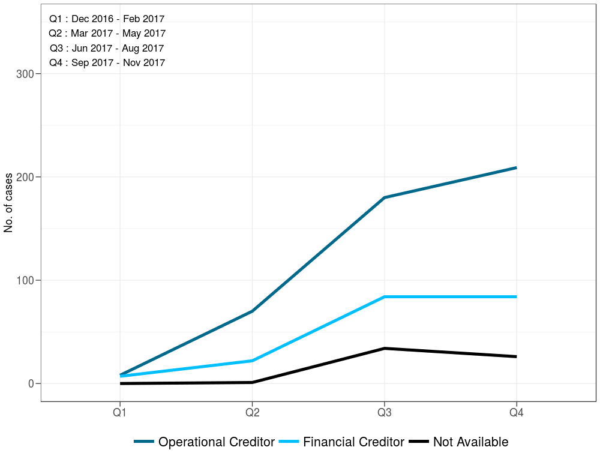
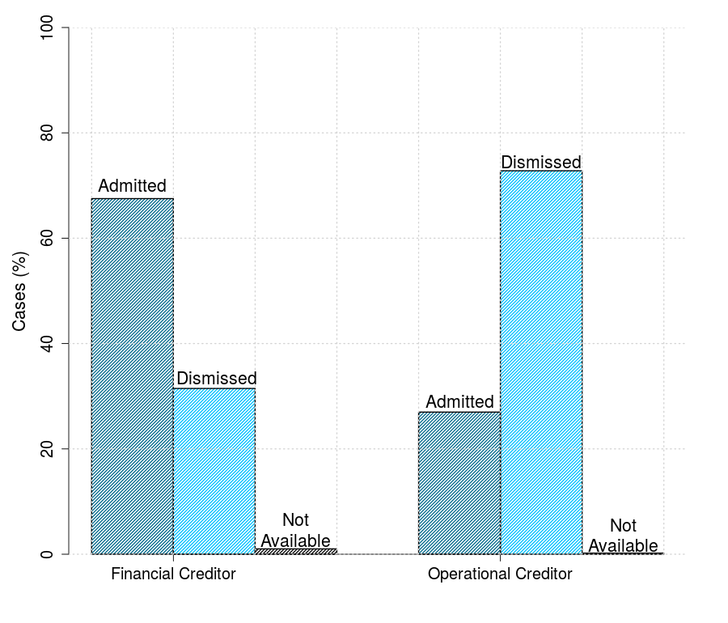
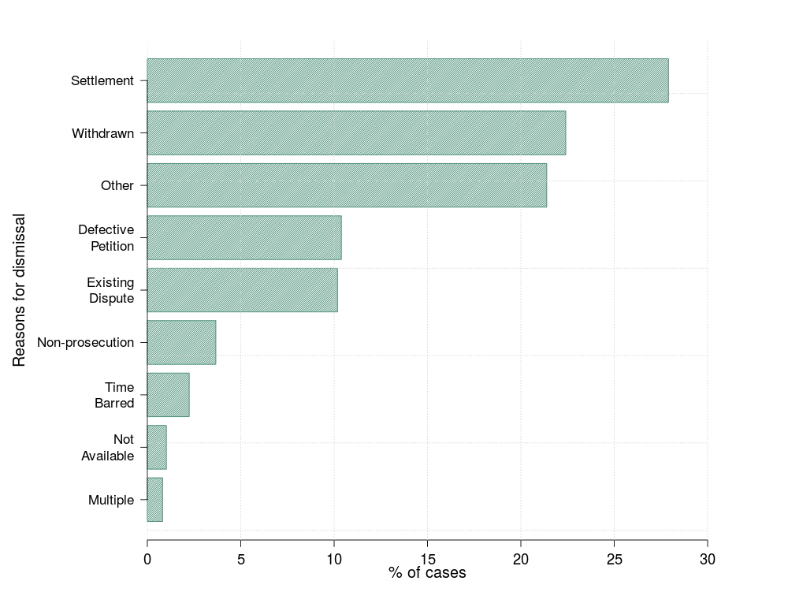

FRG insolvency cases dataset
The FRG insolvency cases dataset comprises data pertaining to the insolvency resolution petitions disposed of by all the benches of the National Company Law Tribunal (NCLT) and the National Company Law Appellate Tribunal (NCLAT), under the Insolvency and Bankruptcy Code, 2016 (IBC). Researchers at the Finance Research Group have hand-collected the data from the orders published on the website of the NCLT and the NCLAT.
(Content: Sreyan Chatterjee, Gausia Shaikh and Bhargavi Zaveri. Implementation: Surbhi Bhatiya. Updates: Surbhi Bhatia and Varun Marwah.)
Who is using the IBC?

What kind of creditors are using the IBC?

Admission and dismissal rates

Grounds for dismissal of petitions

Links
- The FRG insolvency cases dataset
Users of the dataset are requested to note the following:
- If the NCLT or the NCLAT has not published an order on its website, it will not feature in the dataset.
- Interim orders are not part of the dataset.
- Cases transferred from High Courts, are not a part of the dataset.
- Due to frequent changes in the links on the NCLT website, URLs of orders have not been provided.
- Since the orders published on the website are not text searchable or machine readable, the researchers have parsed the entire order to extract the requisite data.
- The dataset must be cited as "Finance Research Group, FRG Insolvency Cases dataset (2017-18)".
- The dataset records appeals disposed of on or before December 31, 2017 only for final NCLT orders recorded in this dataset.
This dataset is dynamic and we will endeavour to update it on a quarterly basis. The last date of updation is reflected in the dataset itself.
Research
- Insolvency And Bankruptcy Code: One-Year Report Card, Surbhi Bhatia, Varun Marwah, Gausia Shaikh and Bhargavi Zaveri, BloombergQuint, 16th May 2018
- Watching India's insolvency reforms: a new dataset of insolvency cases, Sreyan Chatterjee, Gausia Shaikh and Bhargavi Zaveri, FRG Working Paper August 2017.
Press coverage
- Interview: How does one measure the effectiveness of the IBC? BloombergQuint, 9th May 2018
- A year later, the Insolvency and Bankruptcy Code is still evolving, Livemint, 26th January, 2018
- Disputing 'Dispute' Under IBC, Livelaw, 5th January, 2018
- 'Pay up or we go to NCLT' is proving to be a very credible threat, Livemint, 26st December, 2017
- Interview: Insolvency process must be more transparent, says researcher Scroll.in, 23rd December 2017
- Mahesh Bhupati, Lara Dutta file insolvency plea against Gitanjali Gems, Livemint, 21st December, 2017
- Lack of transparency plagues India's new insolvency and bankruptcy regime, Scroll.in, 16th December, 2017
- Bankers wary of insolvency code as high provisioning looms, Business Standard, 13th October, 2017
- Banks turn to MCA to make Insolvency and Bankruptcy Code tougher, Livemint, 11th September, 2017
- Welcome support for the new bankruptcy law, Livemint, 7th September, 2017